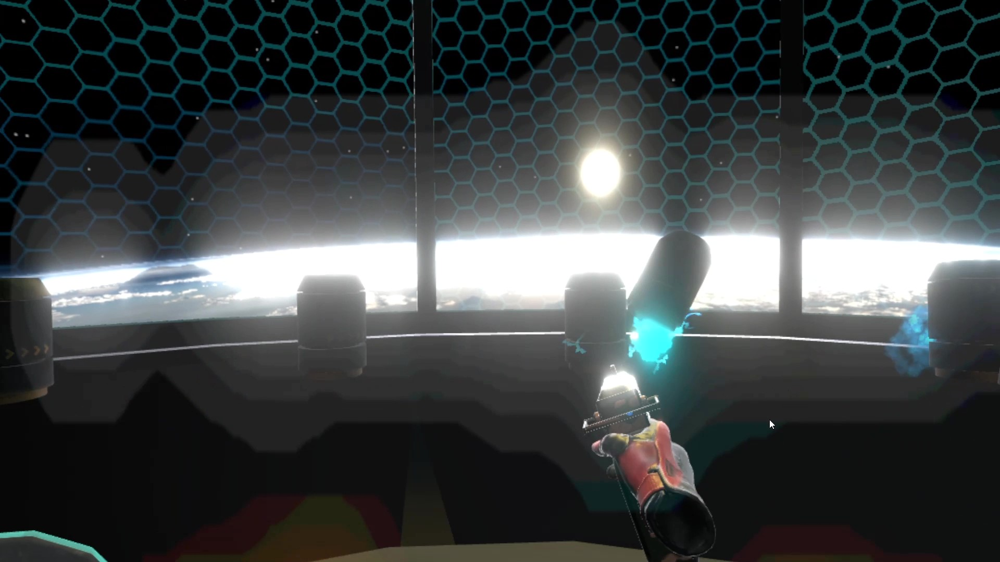

Games

Frog and Croc
Frog and Croc
Frog and Croc is a retro third-person platformer that I made with a team for my Game Development class. The team consisted of three programmers and one artist. I was in charge of gameplay programming, level design, UI, audio programming, and voice acting.
This game was inspired by 3D platformers and collectathons from the late 1990's and the early 2000's, such as Super Mario 64 and Spongebob Squarepants: Battle for Bikini Bottom. Since I grew up with these kinds of games, I knew what made them special. With this game, I wanted to replicate the feel of being a kid playing a game on your Gamecube on a lazy Saturday morning.
This game has the player swap between two characters, creatively named Frog and Croc. I'll let you figure out who is who.

Both Frog and Croc each have unique and complex movesets that can be used to navigate the island's various areas. The island contains various doors that only open when the player has found a specified number of clams. There are a total of 20 clams in the game.

The first area of the game is Frog and Croc's home, which is right next to an obstacle course and playground that the player can use to learn the mechanics in a safe environment. All mechanics are available to the player at the start of the game, so I had to design the levels so that the player wouldn't feel overwhelmed with the number of options they had at their disposal.

The second area of the game is the Tiki Forest. This area introduces the player to enemies as well as combat. This area has a large tree in the middle of a forest clearing that the player must swing around as Frog in order to collect a golden clam that is up too high to jump to.

The third area of the game is the Shoreline. This area is much larger and spread out than the forest. Here, 2 new enemy types are introduced and the player must utilize their special properties to gather all of the clams in this area. For instance, and exploding enemy must be picked up and thrown and some oddly-colored rocks with a yellow glow. These rocks will crumble when the exploding enemy blows up near them, which reveals a golden clam.
The fourth area of the game is the most complex - the Volcano. The player must ascend a large volcano and use every mechanic they have learned up to this point. I wanted to have multiple paths up the mountain for observant players. In fact, there are a total of three paths that the player can traverse! Once the player has gathered all of the golden clams in this area, they can destroy the cork that is plugging up the entrance to the volcano, which allows them to go inside.
The final area of the game is a boss battle against a giant version of a previously seen enemy. In classic 3D platformer fashion, the enemy can be destroyed in 3 hits. Destroying the boss Tiki grants the player a Giant Golden Clam, which is worth four golden clams. This brings the player's total clam count to 20, and they can now traverse the entire island however they please!
A full video playthrough of the game as well as a link to the Itch.io page can be found below.

Reflector VR
Reflector VR
Reflector VR is a first-person VR game that was made as a final project for my Interactive Virtual Environments class. I worked with a team consisting of four artists and two programmers. I worked on gameplay programming, level design, and AI programming.
There are a total of three levels in which the goal is to destroy all the turrets and escape from the testing facility!
At the start of the game, the player receives both a laser pistol and a transparent shield. The player can use the laser pistol to shoot enemy turrets to destroy them. Additionally, the player can also use their shield to reflect lasers right back at the turret that shot it. All of the UI is displayed on the player's shield, which is easy to see in the middle of combat!
Since this game was made using SteamVR's Unity API and an HTC Vive, the player has the option to physically dodge incoming lasers matrix-style, which feels really awesome while you're playing the game, but looks really silly to anyone who sees you in the real world.
One challenge we ran into while developing this game was that players would frequently drop their pistol and shield out of bounds, which made the rest of the game impossible to play. To fix this, I created a capsule hitbox around the player's platform that forced the pistol and shield to bounce back into bounds if they ever went outside of the reachable zone.

The first level is located on the bottom floor of the testing facility. Stationary turrets will rise from the ground around the player in a circle. They will only fire once the player has looked at them, which prevents the player from being shot by a turret that they didn't even know existed. When all turrets have been defeated, the platform that the player is standing on rises upwards like an elevator. We tested the rising speed for motion sickness, and the speed we used was found to be the least nauseating.
The second level puts the player in the center of 4 walkways. Crawling turrets spawn at the ends of the walkways and will slowly make their way towards the player's position. Unlike the turrets on the first floor, these turrets shoot streams of fire that can be blocked by the shield, or dissipated with a few laser shots. Since these turrets are so slow, their fire does a lot of damage over time, so don't let them get too close!

The third and final level pits the player against hordes of flying turrets that fire two lasers at a time. This is the the most hectic and intense level! Each flying turret takes only 1 shot to destroy, so these turrets drop like flies, which is incredibly satisfying. Once the player clears this stage, they ride the elevator up to the top floor where a surprise is waiting...
The whole testing facility is actually in space! I wanted to let the player have some fun once they got here, so I wrote a script that disabled the gravity on the barrels when the player shot them.
A full video playthrough of the game as well as a link to the Itch.io page can be found below.
Dungeon in the Dark
Dungeon in the Dark
Dungeon in the Dark is a first-person horror game that I developed for my Intro to Video Game Level Design class. I was the only developer on this project. Other than a few code snippets from the Unity Asset Store, I was responsible for all of the programming as well as the level design, set dressing, and lighting. Sound effects and art assets all came from the Unity Asset Store and the YouTube audio library.
I wanted to make a first-person horror game where the primary source of horror comes from the environment, rather than from some kind of monster. By having the environment as a looming threat to the player, the majority of the scares happen in the player's mind rather than in the game. This is the design philosophy present in several popular horror games like P.T. and Amnesia, which were big influences on this game.

When the game starts, I spawned the player facing a door with light shining through underneath. Most players attempt to open the door only to find that it is locked. The goal of the game is to unlock this door and escape.

The first part of the game introduces the player to levers, which are used throughout the game to open the doors needed to progress. Later the player must explore the environment for bridge pieces that are needed to cross a gap. The set-dressing contains some unnerving imagery, such as weapons and bones.
Later, the player will find a torture room with skeletons impaled by metal spikes and splayed across a table, as if in preparation for evisceration.

I won't spoil the last part of the game, but let's just say it'll make your heart race...
A full video playthrough of the game as well as a link to the Itch.io page can be found below.

Honey Up! - First Place Overall Winner
Honey Up!
Honey Up! is a a real-time-strategy game that was developed in 48 hours as part of the Chillennium 2019 game jam. I worked in a four person team consisting of two artists and two programmers. I worked on gameplay programming and AI programming. The theme for this game jam was "one for all, and all for one".
This game is like a weird mashup of Plants Versus Zombies and Cookie Clicker. Throughout the game, the player is in charge of a colony of bees, and they must create enough honey to fill the honey bar. The hive starts off with only a single bee, but through hard work, you can increase your bee count to 100 bees!
To make honey, the player needs to collect nectar, which is the main resource in this game. To get nectar, the player must dispatch bees from the hive to the surrounding flowers. Bees can only carry one nectar at a time, which they must then deposit in the hive in order for the player's total nectar amount to increase. However, these bees are smart, and they will continue traveling from the hive to the selected flower until all of the nectar has been collected. The flowers will replenish their nectar over time.

The collected nectar can be used to create one of three different types of bees, each with different attributes. There are Normal Bees, which have average speed and average health. There are Beefy Bees, which have a lot of health, but travel slower. And lastly, there are Fast Bees, which travel at higher speeds and have less health. Each bee type is valuable for certain activities and each bee costs a different amount of nectar to produce.


Nectar can also be used to buy honey, which is the main goal of the game. The total amount of honey that you can store in your hive depends on your hive size. Which brings us to the last item that you can buy with nectar.

Nectar can be used to upgrade the beehive, which increases the range of flowers that the bees can fly to, increases the amount of honey that can be made and stored, and increases the total number of bees that the player can have. Upgrading the hive early is important because it allows you to make more bees! This creates an interesting gameplay loop of balancing short term versus long term goals.
I've participated in Chillennium every year for 4 years, and I'd always hoped that my team's game would win an award. I am incredibly happy to announce that this game won First Place Overall. There were more than 400 participants that came from other universities, states, and even other countries, and there were approximately 90 games that were submitted and judged. I feel incredibly honored to receive this award, and I am very thankful for my teammates participating in this game jam with me.
A full video playthrough of the game as well as a link to the Itch.io page can be found below.

Block Builder: City Escape - Award Finalist
Block Builder: City Escape
Block Builder: City Escape is a 2D puzzle-platformer that was developed in 48 hours as part of the Chillennium 2018 game jam. I worked with a group of three programmers. I worked on gameplay programming, level design, and animation programming. The theme for this game jam was "transformation".
I have always loved playing around with level editors in video games, and one of my favorite games at the time of creating Block Builder was Super Mario Maker. As such, I was inspired to adhere to the game jam's theme of "transformation" by having the player transform the level as they play it.
There are a total of 5 levels in the game where the player must fill in enough platforms in order to reach the flagpole at the end of the stage. Each stage poses a limit on the number and types of blocks that a player can place to get to the end. Additionally, each different placeable block has its own properties, which are gradually introduced to the player as they progress.
You play as a construction worker who is trying to build up a skyscraper. Each level's background gets higher and higher off the ground as the levels progress.

The first level introduces the player to non-moving blocks and falling blocks. The player has a set number of falling blocks that they can place in order to reach the platform. The game has the option to delete the block that you just placed down as well as resetting the level back to its default state in case you place the blocks in such a way that prevents you from reaching the goal.

The second level shows the player that falling blocks will stop when they come into contact with the cloud block, which is immoveable. The player now has access to both falling blocks and cloud blocks that they must use to reach the flag pole.

The third level teaches the plyer how to use the green bouncy platforms. The player has to control their momentum so that they do not fall to their doom. This level also gives the player a few safety cloud blocks (for those that like to take the easy way out).

The fourth level contains the last kind of block - the speedy block. This block increases the player's speed as they move across it. I set up a situation in this level where a speedy block is placed right next to a bouncy block. When the player goes across these two blocks in sequence, their momentum is conserved through the jump, and they are able to travel much further.

The last level provides the player with a playground to use every kind of block that they have been introduced to. This level is the most vertically oriented, so the player must come up with a way to rapidly gain height. There is no single correct way to complete this stage, which makes it really fun and unique!
During the judging process, this game made it to the final rounds! While this game did not ultimately win any awards, it did become a Chillennium Award Finalist.
A full video playthrough of the game as well as a link to the Itch.io page can be found below.

Summon the Spellbook (WIP)
Summon the Spellbook
This game is currently in development, and has made incremental progress since the summer of 2019. I have been working with three other people to design and implement the game mechanics. This particular level of the game was made for my Level Design class. All of the programming and level design was done by me, and all of the art assets and music were received from the Unity Asset Store, YouTube music artists, and other free online sources.
As of right now, most of these art assets and sounds are placeholders. I have a vision for a larger adventure for which this level is a small part of.
In the full game, you will play as a young girl who comes from the wind village and starts with only knowing a single wind spell that she keeps in her spell book. Throughout the game, the young girl will travel to various locations and conquer dungeons and temples spread all over the region. In each dungeon, the young girl will add a spell to her spell book. In addition to the wind spell, there are three missing spells - the fire spell, the ice spell, and the thunder spell. The goal of the game is to complete the spell book by conquering all of the dungeons.
The main mechanic of the game is combining spells to unleash new attacks. Up to this point, I have currently implemented the wind spell, which stuns enemies and knocks back both enemies and other objects, and the fire spell, which is a swipe from a sword made of fire. The fire spell can be used to light torches and deal damage to enemies. If the player uses both spells at the same time, they throw a fire boomerang which returns to the player after a certain amount of time. The idea for the game is that every spell can be combined to unleash a new combination spell!

In this dungeon, you start with the fire spell. The first few rooms teach the player how to use the fire spell and what kind of environmental effects it can have, such as lighting torches on fire and reflecting projectiles. At the midpoint of the dungeon, the player will find the wind spell and will be introduced to a type of enemy that is on fire. Since the wind spell can put out fire, the player must put out the enemy's fire before being able to damage them with the fire spell.
The dungeon ends with a showdown against a large fire enemy with three phases.
In addition to this dungeon, I have created a few other small dungeons where I am testing different mechanics that I would like to add into the game, like enemies that look like crates but when you pick them up they attack you. Fun stuff.
I plan to continue development in the near future.
A full video playthrough of the game as well as a link to the Itch.io page can be found below.